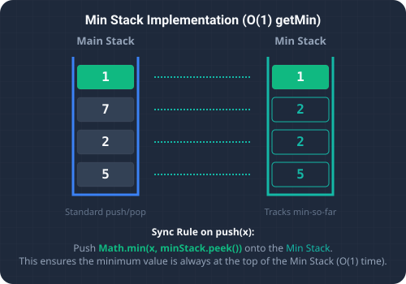

What We're Solving & Stack Constraints
Designing custom data structures to optimize specific access patterns is a fundamental exercise in systems design. The Min Stack problem requires us to design a stack data structure that supports standard operations: push, pop, top, and retrieving the minimum element getMin, all in constant O(1) time complexity.
A standard stack executes push and pop operations in O(1) time. However, finding the minimum element typically requires searching every item, which scales linearly at O(n) time. The challenge is to optimize minimum element retrieval to constant time without violating the LIFO (Last In, First Out) stack constraints.

To visualize this constant-time minimum search, imagine keeping a ledger history of numbers:
- Main Ledger: When you add a new number, you write it on the main page stack.
- Min History Notepad: To instantly answer "what is the smallest number currently in the pile?", you keep a second helper notepad right next to it.
- Syncing Writes: Whenever you push a number onto the main page, you check if it is smaller than or equal to the top number on your notepad. If it is (or if the notepad is empty), you write it on the notepad as well. If not, you do nothing.
- Syncing Deletions: When you pop a number off the main stack, you check if it matches the top number on your notepad. If it does, you pop it from the notepad too.
The Strategy
Auxiliary Min Stack Synchronization (O(1) Time, O(n) Space)
Let's look at the implementation details of this dual-stack strategy:
- Data Stack: A standard stack (
stack) holds all elements in their original insertion order. - Min-Tracking Stack: An auxiliary stack (
minStack) tracks the running minimum values. - Conditional Push: When executing
push(val), we always push it onto the main stack. We also comparevalagainst the current minimum (peeking at the top ofminStack). IfminStackis empty or ifval <= minStack.peek(), we pushvalontominStackas well. Note the<=comparison: it is critical to push duplicate minimum values so that subsequent pops do not prematurely remove the running minimum. - Synchronized Pop: When executing
pop(), we pop the top element from the main stack. If this popped element equals the top ofminStack, we pop it fromminStackas well to maintain synchronization.
Detailed Trace Walkthrough
Let's trace the state changes of our stacks through a sequence of operations: push(-2), push(0), push(-3), getMin(), pop(), top(), getMin():
- Step 1 (Push -2):
- Push
-2tostack→stack = [-2]. - Since
minStackis empty, push-2tominStack→minStack = [-2].
- Push
- Step 2 (Push 0):
- Push
0tostack→stack = [-2, 0]. - Compare
0with the top ofminStack(-2). Since0 > -2, we do not push it tominStack. - State:
stack = [-2, 0],minStack = [-2].
- Push
- Step 3 (Push -3):
- Push
-3tostack→stack = [-2, 0, -3]. - Compare
-3with the top ofminStack(-2). Since-3 <= -2, we push-3tominStack. - State:
stack = [-2, 0, -3],minStack = [-2, -3].
- Push
- Step 4 (GetMin):
- Peek at the top of
minStack, returning-3. This lookup executes inO(1)constant time.
- Peek at the top of
- Step 5 (Pop):
- Pop from
stack, removing-3→stack = [-2, 0]. - Since the popped value
-3equalsminStack.peek(), we pop fromminStackas well →minStack = [-2].
- Pop from
- Step 6 (Top):
- Peek at the top of
stack, returning0.
- Peek at the top of
- Step 7 (GetMin):
- Peek at the top of
minStack, returning-2.
- Peek at the top of
Code Highlights & Stack API
Understanding the Java implementation helper methods:
val <= minStack.peek()handles multiple duplicate minimums correctly.stack.pop().equals(minStack.peek())compares object values. Using.equals()rather than==is important in Java to avoid reference comparison issues when values are auto-boxed intoIntegerobjects.
Full Code Solution
Below is the complete Java implementation featuring synchronized helper stacks, along with a main runner to trace the outputs.
package io.practise.dsa;
import java.util.Stack;
public class MinStack {
private Stack<Integer> stack = new Stack<>();
private Stack<Integer> minStack = new Stack<>();
public void push(int val) {
stack.push(val);
if (minStack.isEmpty() || val <= minStack.peek()) {
minStack.push(val);
}
}
public void pop() {
if (stack.pop().equals(minStack.peek())) {
minStack.pop();
}
}
public int top() {
return stack.peek();
}
public int getMin() {
return minStack.peek();
}
public static void main(String[] args) {
MinStack minStack = new MinStack();
System.out.println("--- Min Stack Demonstration ---");
minStack.push(-2);
minStack.push(0);
minStack.push(-3);
System.out.println("Min: " + minStack.getMin()); // -3
minStack.pop();
System.out.println("Top: " + minStack.top()); // 0
System.out.println("Min: " + minStack.getMin()); // -2
}
}Conclusion & Takeaways
Solving the Min Stack problem highlights the utility of auxiliary storage to optimize expensive operations. By maintaining a synchronized secondary stack of historical states, we trade a small memory overhead for a major algorithmic boost: converting linear $O(n)$ search scans into a simple $O(1)$ stack peek.